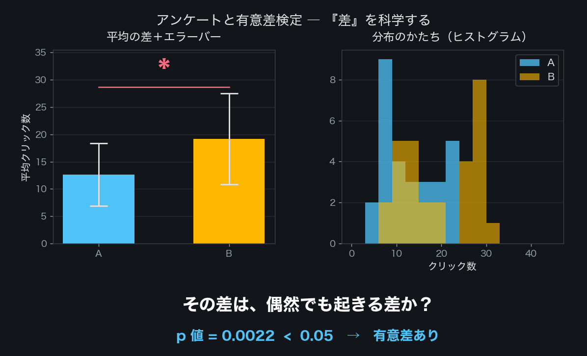
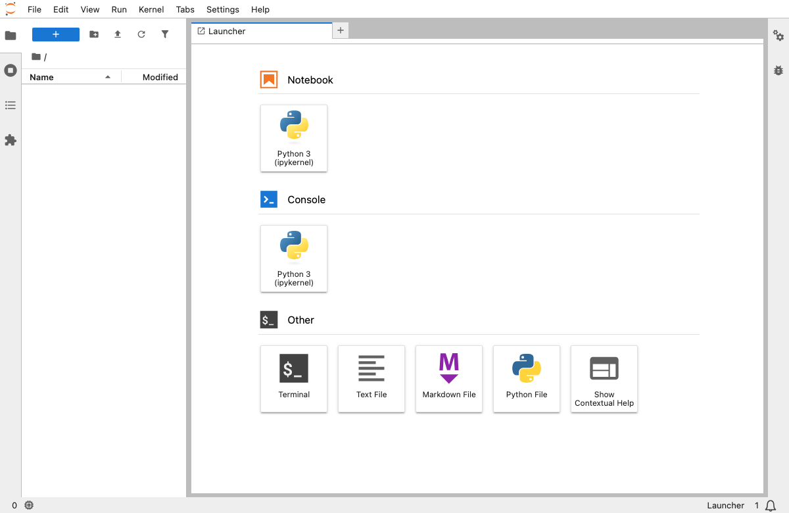
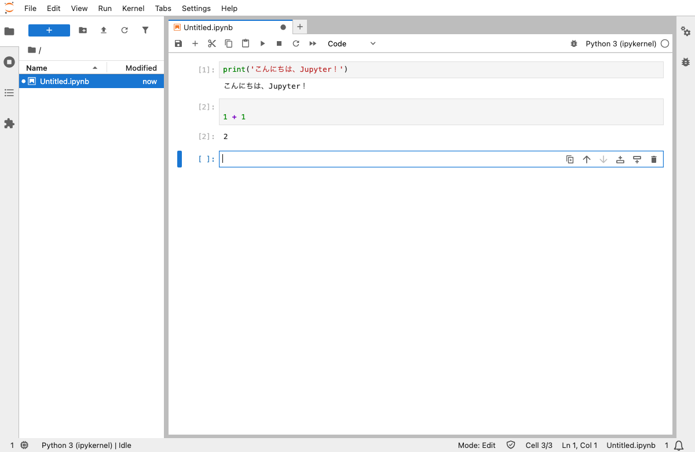
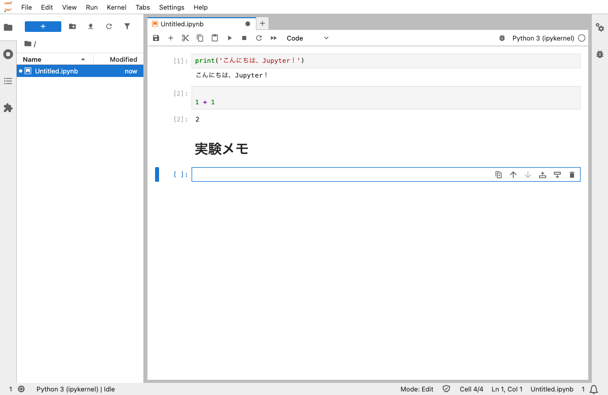
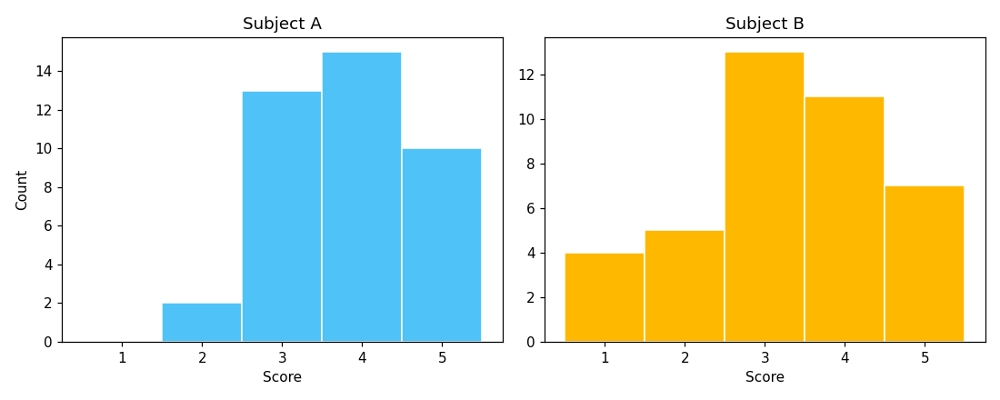
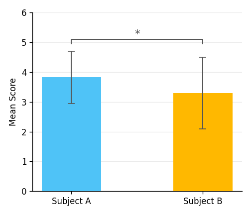
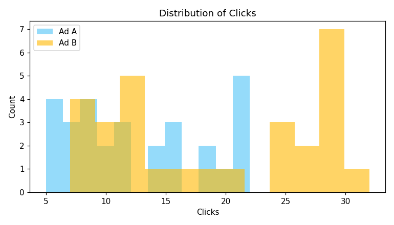
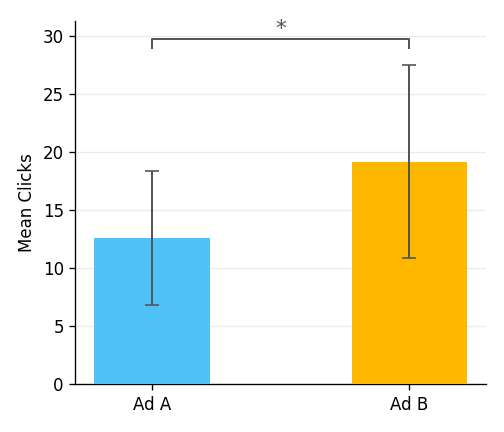

武蔵野大学データサイエンス学部
武蔵野大学国際データサイエンス学部（通信教育部）
中村 亮太
2つのグループを比べると、平均値にはほぼ必ず差が出る。しかしその差は、偶然のばらつきでも出る差かもしれない。第6回は、アンケート調査で自分たちの実験データを作り、統計検定（有意差検定）を使って「その差は偶然か、意味のある差か」を確率にもとづいて判断する方法を学ぶ。

テーマは引き続き 「バーチャル空間で、データサイエンスを実践する」。第5回までで、データを生む・記録する・集計するところまで来た。第6回からは STEP 3（データを分析する）。集計して出てきた「差」が偶然なのか、意味のある差なのかを判断する道具 ― 統計検定を手に入れる。
第5回では、相関係数 0.95 を見て「関係がありそう」までは言えた。今日はその先 ― 2つのグループを比べて、差があると言えるかどうかを、勘ではなく確率で判断する。これは卒業研究でも実務のABテストでも、そのまま使う型である。
本科目全体の流れ（再確認）。第6回から STEP 3（データを分析する）に入る。
| 節 | やること | 課題 |
|---|---|---|
| 1 | なぜ統計検定が要るのか（p値・有意水準・検定の選び方）＋尺度水準ワーク | 説明・グループワーク gw6-1 |
| 2 | セットアップ（md2_no6 / JupyterLab / 配布CSV） | 説明・手順 |
| 🎮 | まず完成版を動かし、「有意差あり」と「有意差なし」を両方見る | 体験 |
| 3 | 対応のある2群：満足度CSVをカテゴリ→数値化して検定する | 標準課題 std6-1 |
| 4 | 対応のない2群：ABテストのCSVをU検定にかける | 標準課題 std6-2 |
| 5 | グループで「2つを比べるアンケート」を作り、授業中にクラスで答え合う → 集めた回答を検定してミニレポート（最後の課題） | グループワーク gw6-2 ＋ 標準課題 std6-3 |
| 6 | 先輩にアンケート調査をして、検定まで通す | 発展課題 adv6-1 |
※ 発展課題（adv6-1）は任意、ほかはすべて必須。標準課題（std6-1・std6-2）は実行結果のキャプチャ（Jupyter のセル出力・グラフ）、std6-3 はミニレポート、グループワーク（gw6-1・gw6-2）は議論の結論とアンケートの設計内容を記録します。
2つのグループの平均を比べれば、差はほぼ必ず出る。まったく同じ授業を受けた2クラスでも、テストの平均点はピッタリ同じにはならない。問題はその差が「偶然のばらつき」の範囲か、それを超えているかである。
「もし本当は差がない（＝偶然だけ）としたら、目の前の差（かそれ以上）が出る確率はどれくらいか」を計算する道具。この確率を p値 と呼ぶ。p値が小さい＝「偶然にしては起こりにくい」＝偶然では説明しづらい、意味のある差（有意差）と判断する。
検定の前に、そのデータで平均を計算してよいのかを考える。第2回のオブジェクト＝レコードの話と同じで、データの種類が操作を決める。
| データの種類 | 尺度水準 | 尺度の意味 | 算術計算 |
|---|---|---|---|
| 質的データ | 名義尺度 | 区別できる | 不可 |
| 順序尺度 | 順序・大小がある | 不可 | |
| 量的データ | 間隔尺度 | 間隔が等しい | 加法、減法 |
| 比例尺度 | 0（ゼロ）に意味がある | 加法、減法、乗法、除法 |
タスク1 ― 次の12個のデータは、それぞれどの尺度水準か？
上の表と見比べながら、質的データ（名義尺度／順序尺度）・量的データ（間隔尺度／比例尺度）の4つに分類する（各3個ずつ）。まず質的か量的かで大きく分けてから、細かい尺度を考えると迷いにくい。
タスク2 ― 5段階アンケートで「平均 3.8」と言ってよいのか？
満足度アンケートは「非常に満足=5 … 非常に不満=1」と点数にして、平均を計算するのが当たり前のように行われている。しかしタスク1で分類したとおりなら、算術計算は「不可」のはずだ。矛盾していないか？ 次の3つを議論して、自分たちの結論を出す：
タスク3 ― 次の3つの文は、どこがおかしいか？
どれも計算そのものはできてしまうのがポイント。タスク1の分類を手がかりに、何がまずいのかをグループで説明できるようにする。
例文1：「このクラスの学籍番号の平均は 2213045.6 でした」
例文2：「レビューが ★5 と ★1 に真っ二つのラーメン屋。平均★3なので『普通の店』です」
例文3：「昨日は10℃、今日は20℃。今日は昨日の2倍暑い」
分類・結論・例文3つの説明を、グループで発表できるようにしておく。
🔐 答え合わせ ― 議論と発表が終わったら、先生が伝えるパスコードを入力して確認する。
検定はたくさんあるが、選び方は機械的。①対応があるか → ②正規性があるか（→ ③等分散か）の順に確かめて、表をたどるだけ。
| 目的 | データ間の対応 | 正規分布 シャピロ・ウィルク検定で確認 | 等分散性 F検定で確認 | 検定名 |
|---|---|---|---|---|
| 有意差を確認 （統計的に意味のある差） | 対応あり （同じ対象） | あり | ― | 対応のあるT検定 |
| なし | ― | ウィルコクソン符号順位検定 | ||
| 対応なし （異なる対象） | あり | あり | スチューデントのT検定 | |
| なし | ウェルチのT検定 | |||
| なし | ― | マン・ホイットニーのU検定 （ウィルコクソン順位和検定） |
stats.shapiro(データ) で確認。ここでは p > 0.05 なら「正規性あり」とみなす（有意差の検定とは判定の向きが逆になることに注意）md2_no6 と JupyterNotebookmd2_no6 を作って、配布CSVを入れる今日は Node.js は使わない。Python だけの回。作業フォルダ md2_no6 を作り、下の配布CSVを4つダウンロードして入れる。
配布CSV（クリックでダウンロード）
| ファイル | 中身 |
|---|---|
md2w6_diet.csv | ダイエットプログラム前後の体重（25人・対応あり） |
md2w6_diet_no_diff.csv | 別のプログラムの前後の体重（25人・対応あり） |
md2w6_satisfaction.csv | 科目Aと科目Bの満足度アンケート（40人・5段階の日本語ラベル） |
md2w6_ab_test.csv | 広告Aと広告Bのクリック数（ABテスト・欠損値入り） |
.venv）を作って、今日の部品を入れる第1・3・5回とまったく同じ流れ。uv で仮想環境を作り、今日は jupyterlab（ノートブック）と scipy（統計検定）が新顔。
① 仮想環境を作る（md2_no6 の中で1回だけ）
Terminal# md2_no6 の中にいることを確認してから実行する uv venv
② 仮想環境を有効化する（ターミナルを開くたびに毎回）
Terminalsource .venv/bin/activate # Mac / Linux # .venv\Scripts\activate # Windows の場合
成功すると、行頭に (.venv) と出る。
③ 部品を入れる（(.venv) が出ている状態で1回だけ）
Terminaluv pip install jupyterlab pandas matplotlib scipy
| 部品 | 役割 |
|---|---|
jupyterlab | JupyterNotebook。コードをセル単位で実行できる開発環境（今日の主役の道具） |
pandas | CSVを表（DataFrame）として読む・前処理する（第3・5回の続き） |
matplotlib | グラフを描く（第5回の続き） |
scipy | 統計検定の本体。scipy.stats に shapiro / ttest_rel / wilcoxon / mannwhitneyu が入っている |
④ JupyterLab を起動する
Terminaljupyter lab
→ ブラウザが自動で開く（http://localhost:8888）。Notebook → Python 3 を選ぶと新しいノートブックができる。名前を analysis.ipynb にしておく。止めるときはターミナルで Ctrl+C。
Notebook はセル（小さなコード箱）の集まり。1セル書いては実行し、出力をすぐ確かめる ― 第5回に analyze.py へ1行ずつ足していった流れを、もっと小刻みにやれる道具。コード・実行結果・グラフが1つのファイルに残るので、分析の記録にも提出物にも向く。
| キー | はたらき |
|---|---|
| Shift+Enter | セルを実行して下のセルに移動（いちばん使う） |
| Enter | 編集モードに移行（セルに入力できる） |
| esc | コマンドモードに戻る（下のキーは esc を押してから） |
| a / b | 上（above）／下（below）にセルを挿入 |
| dd | セルを削除 |
| z | 操作を1つ前に戻す（消したセルを戻すなど） |
| c / v | セルをコピー／貼り付け |
| m / y | markdown（メモ）モード／code モードに切り替え |
| l | セルの行番号の表示を切り替え |
| command+s | 保存 |
✍️ 操作練習ドリル（5分）― 表を見ながら、手で覚える
キーは読んでも覚えられない。下のドリルをスクショと同じ状態になるまでやる。今日の分析はぜんぶこの操作の上に乗る。
ドリル① ── ノートブックを作る
jupyter lab で開いた画面（Launcher）の Notebook → Python 3 (ipykernel) をクリック。

jupyter lab を実行するとブラウザで開く。Notebook の下の Python 3 が今日の入口。ドリル② ── セルを実行する（Shift+Enter）
print('こんにちは、Jupyter！') と書いて Shift+Enter1 + 1 と書いて Shift+Enter
[1] [2] と実行した順番が付く。1 + 1 は print を書かなくても最後の値が勝手に表示される ― Notebook の便利機能。ドリル③ ── メモのセルを作る（esc → m）
# 実験メモ と書いて Shift+Enter
# 実験メモ が大きな見出しに変わればOK。コードの合間に日本語のメモや考察を残せる ― これが「分析の記録」に向く理由。ドリル④ ── 挿入・削除・復活（a / dd / z）
→ 「消しても z で戻せる」と体で知っておくと、あとで怖くなくなる。
ドリル⑤ ── 保存して、名前を変える
Untitled.ipynb を右クリック → Rename → analysis.ipynb に変える[1] [2] が付いているanalysis.ipynb という名前で保存されているModuleNotFoundError: No module named 'scipy'：(.venv) を出してから jupyter lab を起動したか確認。ダメなら一度 Ctrl+C で止めて、②→④をやり直すFileNotFoundError：CSVが analysis.ipynb と同じフォルダにあるか確認（左のファイル一覧で見える）お題：「ダイエットプログラムの前後で、体重の平均に差があるか」。同じ25人の前後の測定＝対応のあるデータ。下のコードを analysis.ipynb のセル1つに丸ごと貼って Shift+Enter。
Jupyter ── セルに丸ごと貼って実行import pandas as pd from scipy import stats # ① CSVを読み込んで、目で見る df = pd.read_csv('md2w6_diet.csv') print(df.head()) print(f'サンプル数: {len(df)}') # ② 平均と標準偏差（μ と σ） print(f'before の平均: {df["before"].mean():.2f} kg (SD: {df["before"].std():.2f})') print(f'after の平均: {df["after"].mean():.2f} kg (SD: {df["after"].std():.2f})') # ③ 正規性の確認（Shapiro-Wilk検定。p > 0.05 なら正規性あり） stat_b, p_b = stats.shapiro(df['before']) stat_a, p_a = stats.shapiro(df['after']) print(f'正規性 before: p={p_b:.4f}, after: p={p_a:.4f}') # ④ 対応のあるt検定（対応あり × 正規性あり → 表のとおり） t_stat, p_value = stats.ttest_rel(df['before'], df['after']) print(f't値: {t_stat:.4f}') print(f'p値: {p_value:.6f}') if p_value < 0.05: print('→ before と after のあいだに有意差あり') else: print('→ before と after のあいだに有意差なし')
次に、ファイル名を1か所だけ変えて、もう一度実行
Jupyter ── ①の行だけ変えるdf = pd.read_csv('md2w6_diet_no_diff.csv') # 別のプログラムのデータに差し替え
md2w6_satisfaction.csv は、同じ40人が科目Aと科目Bの両方を5段階で評価したアンケート結果 ― つまり対応のあるデータ。このあと gw6-2 で自分たちが集めるデータと同じ形である。ただし1つ問題がある：中身が「非常に満足」「普通」といった日本語ラベル（カテゴリデータ）で、このままでは平均も検定も計算できない。
map）「非常に満足→5、満足→4、…、非常に不満→1」という対応表（辞書）を作り、map で列ごと変換する。第5回の drop_duplicates（重複を落とす）に続く、前処理の道具箱の2つめ。アンケート分析では毎回やる。
先生と一緒に、1セルずつ実行して動作を確かめながら進める。それぞれのコードの意味はその場で説明するので、聞きながら手を動かせばよい。そのかわり最後に、説明された意味を「自分の言葉」で書き直すのが課題（下の 📝）。
セル1 ── まず読んで、目で見る
Jupyter ── セル1import pandas as pd import matplotlib.pyplot as plt from scipy import stats df = pd.read_csv('md2w6_satisfaction.csv') print(df.head()) print(f'サンプル数: {len(df)}')
セル2 ── 欠損値を確認する
分析の前に穴（未回答）がないか必ず見る。今回は0だが、自分たちのアンケートでは普通に起きる。
Jupyter ── セル2print(df.isnull().sum())
df = df.dropna() で落とす（std6-2 で実際にやる）。セル3 ── カテゴリ → 数値に変換する（今日の前処理の山場）
Jupyter ── セル3# 対応表（辞書）：ラベル → 点数 score_map = {'非常に満足': 5, '満足': 4, '普通': 3, '不満': 2, '非常に不満': 1} df['A'] = df['科目A満足度'].map(score_map) # ラベルの列を、点数の列に変換 df['B'] = df['科目B満足度'].map(score_map) print(df.head())
A・B 列が増えた。これでようやく計算できる形になった（順序尺度 → 点数化）。セル4 ── 記述統計（μ と σ）
Jupyter ── セル4print(f'科目A の平均: {df["A"].mean():.2f} (SD: {df["A"].std():.2f})') print(f'科目B の平均: {df["B"].mean():.2f} (SD: {df["B"].std():.2f})')
セル5 ── 分布をヒストグラムで見る
Jupyter ── セル5fig, axes = plt.subplots(1, 2, figsize=(10, 4)) axes[0].hist(df['A'], bins=[0.5, 1.5, 2.5, 3.5, 4.5, 5.5], color='#4FC3F7', edgecolor='white') axes[0].set_title('Subject A') axes[0].set_xlabel('Score') axes[0].set_ylabel('Count') axes[1].hist(df['B'], bins=[0.5, 1.5, 2.5, 3.5, 4.5, 5.5], color='#FFB800', edgecolor='white') axes[1].set_title('Subject B') axes[1].set_xlabel('Score') plt.tight_layout() plt.show()

セル6 ── 正規性の確認（Shapiro-Wilk）
Jupyter ── セル6stat_a, p_a = stats.shapiro(df['A']) stat_b, p_b = stats.shapiro(df['B']) print(f'科目A: W={stat_a:.4f}, p={p_a:.4f}') print(f'科目B: W={stat_b:.4f}, p={p_b:.4f}')
セル7 ── 表のとおりに検定を選んで実行する
対応あり × 正規性なし → ウィルコクソン符号順位検定。正規性がありなら対応のあるt検定。その分岐をコードにする。
Jupyter ── セル7if p_a > 0.05 and p_b > 0.05: # 両方に正規性あり → 対応のあるt検定 t_stat, p_value = stats.ttest_rel(df['A'], df['B']) print(f'対応のあるt検定: t={t_stat:.4f}, p={p_value:.4f}') else: # 正規性なし → ウィルコクソン符号順位検定 w_stat, p_value = stats.wilcoxon(df['A'], df['B']) print(f'ウィルコクソン符号順位検定: W={w_stat:.1f}, p={p_value:.4f}') if p_value < 0.05: print('→ 科目Aと科目Bの満足度に有意差あり') else: print('→ 科目Aと科目Bの満足度に有意差なし')
セル8 ── 結果を1枚のグラフにする（エラーバー＋アスタリスク）
論文の図の定番の形：細身の棒＝平均、ヒゲ（エラーバー）＝標準偏差、ブラケット（橋）＋「*」＝有意差あり。上と右の枠線を消すと一気に「論文の図」の顔になる。
Jupyter ── セル8labels = ['Subject A', 'Subject B'] means = [df['A'].mean(), df['B'].mean()] sds = [df['A'].std(), df['B'].std()] fig, ax = plt.subplots(figsize=(4.2, 3.6), dpi=120) ax.bar(labels, means, width=0.45, color=['#4FC3F7', '#FFB800'], zorder=3) ax.errorbar(labels, means, yerr=sds, fmt='none', ecolor='#555555', elinewidth=1.2, capsize=4, zorder=4) ax.set_ylabel('Mean Score') ax.set_ylim(0, 6) ax.spines[['top', 'right']].set_visible(False) # 上と右の枠線を消す ax.grid(axis='y', alpha=0.25, zorder=0) ax.set_axisbelow(True) if p_value < 0.05: # 有意差のブラケット（橋）と「*」 y = max(m + s for m, s in zip(means, sds)) + 0.25 ax.plot([0, 0, 1, 1], [y, y + 0.15, y + 0.15, y], color='#555555', lw=1.2) ax.text(0.5, y + 0.22, '*', ha='center', fontsize=13, color='#555555') plt.tight_layout() plt.show()

授業中の説明を聞いたまま写すのではなく、自分の言葉で説明し直せるかが課題。次の3問に答える：
map(score_map) は何をしているか。なぜ検定の前にこれが必要なのか ― 尺度水準の言葉を使って説明せよp = 0.0017 という数字は何の確率か。「Aの方が満足度が高い確率が99.83%」ではないことに注意して、自分の言葉で説明せよある商品に対して2パターンのインターネット広告 A・B を作り、ランダムに選ばれた別々のユーザにどちらか一方を見せて、クリック数を比べる ― マーケティングの定番「ABテスト」。同じ人が両方を見るわけではないので、これは対応のないデータである。
md2w6_ab_test.csv は Group（A/B）と Clicks（クリック回数）の2列に全員分が縦に混在している。まずグループごとに取り出す必要がある。
df[df['Group'] == 'A']['Clicks']df['Group'] == 'A' ― Group 列が A と一致するかを行ごとに判定（True/Falseの列になる）df[df['Group'] == 'A'] ― Trueの行だけ、つまりグループAの行だけを選んだ表df[df['Group'] == 'A']['Clicks'] ― その表から Clicks 列だけを抽出df[df['event'] == 'move'] は ②までで止めた形 ― まったく同じ仕組み。第5回の df[df['event'] == 'move'] とまったく同じ形。「絞ってから、列を取る」。
std6-1 と同じ型（読む → 前処理 → 記述統計 → 正規性 → 検定 → グラフ）を、対応のないデータで通す。今度は欠損値が本当に入っている。ここも先生と一緒に1セルずつ実行して動作確認し、意味の説明を聞いたら、最後に自分の言葉で書く（下の 📝）。
セル1 ── 読んで、目で見る
Jupyter ── セル1（新しいノートブックでも、続きのセルでもよい）import pandas as pd import matplotlib.pyplot as plt from scipy import stats df = pd.read_csv('md2w6_ab_test.csv') print(df.head()) print(f'行数: {len(df)}')
Clicks が 15.0 と小数表示なのは、列のどこかに欠損（NaN）があるサイン。セル2 ── 欠損値を確認して、落とす
Jupyter ── セル2print(df.isnull().sum()) df = df.dropna() # 欠損値を含む行を削除する print(f'欠損値を削除したあとの行数: {len(df)}')
Clicks に欠損が2件 → 削除して 60 → 58行。何行落としたかを必ず記録するのがレポートの作法。セル3 ── グループごとに取り出して、記述統計
Jupyter ── セル3clicks_A = df[df['Group'] == 'A']['Clicks'] clicks_B = df[df['Group'] == 'B']['Clicks'] print(f'広告A: {len(clicks_A)}人, 平均 {clicks_A.mean():.2f} 回 (SD: {clicks_A.std():.2f})') print(f'広告B: {len(clicks_B)}人, 平均 {clicks_B.mean():.2f} 回 (SD: {clicks_B.std():.2f})')
セル4 ── 分布を重ねて見る
Jupyter ── セル4fig, ax = plt.subplots(figsize=(7, 4)) ax.hist(clicks_A, bins=12, alpha=0.6, label='Ad A', color='#4FC3F7') ax.hist(clicks_B, bins=12, alpha=0.6, label='Ad B', color='#FFB800') ax.set_xlabel('Clicks') ax.set_ylabel('Count') ax.set_title('Distribution of Clicks') ax.legend() plt.tight_layout() plt.show()

セル5 ── 正規性の確認
Jupyter ── セル5stat_a, p_a = stats.shapiro(clicks_A) stat_b, p_b = stats.shapiro(clicks_B) print(f'広告A: W={stat_a:.4f}, p={p_a:.4f}') print(f'広告B: W={stat_b:.4f}, p={p_b:.4f}')
セル6 ── マン・ホイットニーのU検定（両側検定）
Jupyter ── セル6u_stat, p_value = stats.mannwhitneyu(clicks_A, clicks_B, alternative='two-sided') print(f'U値: {u_stat:.1f}') print(f'p値: {p_value:.4f}') if p_value < 0.05: print('→ 広告Aと広告Bのクリック数に有意差あり') else: print('→ 広告Aと広告Bのクリック数に有意差なし')
alternative='two-sided' ― 両側検定と片側検定セル7 ── 仕上げのグラフ
Jupyter ── セル7labels = ['Ad A', 'Ad B'] means = [clicks_A.mean(), clicks_B.mean()] sds = [clicks_A.std(), clicks_B.std()] fig, ax = plt.subplots(figsize=(4.2, 3.6), dpi=120) ax.bar(labels, means, width=0.45, color=['#4FC3F7', '#FFB800'], zorder=3) ax.errorbar(labels, means, yerr=sds, fmt='none', ecolor='#555555', elinewidth=1.2, capsize=4, zorder=4) ax.set_ylabel('Mean Clicks') ax.spines[['top', 'right']].set_visible(False) # 上と右の枠線を消す ax.grid(axis='y', alpha=0.25, zorder=0) ax.set_axisbelow(True) if p_value < 0.05: # 有意差のブラケット（橋）と「*」 y = max(m + s for m, s in zip(means, sds)) + 1.5 ax.plot([0, 0, 1, 1], [y, y + 0.8, y + 0.8, y], color='#555555', lw=1.2) ax.text(0.5, y + 1.1, '*', ha='center', fontsize=13, color='#555555') plt.tight_layout() plt.show()

授業中の説明を聞いたまま写すのではなく、自分の言葉で説明し直せるかが課題。次の3問に答える：
df[df['Group'] == 'A']['Clicks'] を内側から3段階に分解して、それぞれの段階で何が起きているか説明せよdropna() を忘れたまま進めると、どこで・何が起きるか。「欠損値」という言葉を使って説明せよ対応のある2群（std6-1）・ない2群（std6-2）の型は手に入った。ここからは本物の実験データを自分たちで作る。いま Google フォームを作り、Slack の授業チャンネルで公開して、授業中にクラスメイトから回答を得る。回答者はこの教室にいる ― お互いのフォームに答え合えば、その場で n が集まる。
手順① ― 比べたい「2つ」を決める
手順② ― リッカート尺度で質問を作る
リッカート尺度＝あらかじめ決めた評価段階で答えてもらう方法（社会学者レンシス・リッカートに由来）。白黒はっきり答えづらい質問でも程度を測れる。顧客満足度・ブランド認知度など実務でも定番。
手順③ ― 回答率を上げる「4つのポイント」で依頼文を書く
手順④ ― Google Forms で作って配信する
配布CSVで練習した型を、自分たちが集めた本物のデータに使う。ここまでできたら、データサイエンスの一連の流れ（収集 → 前処理 → 分析 → 報告）を1人で回せたことになる。
手順
map で数値化 → 記述統計 → 正規性 → 検定 → エラーバーつき棒グラフ）。コードはほぼ使い回せる（列名と score_map のラベルを自分のフォームに合わせる）| 構成 | 書くこと |
|---|---|
| 1. はじめに | 実験の目的・方法・結果の概要（3〜4行） |
| 2. 実験方法 | 第3者が読んで再現できるくらい具体的に：何と何を・誰に・何人に・どの尺度で聞いたか |
| 3. 実験結果 | 表・グラフを示しながら説明：n、各群の μ と σ、正規性の結果、使った検定名、p値、結論 |
map のあとが全部 NaN：score_map のラベルがフォームの選択肢の文字列と1文字でも違うと NaN になる（前後の空白にも注意）。df['A'].unique() で実際のラベルを確認gw6-2〜std6-3 の回答者はクラスメイトだった。今度は先輩に聞く。回答者が変わると、依頼のしかたも、聞けることも変わる ― 企画から結論まで、ぜんぶ1人でやる。
手順（gw6-2 と同じ型を、1人で）
map → 記述統計 → 正規性 → 検定 → グラフ → 3部構成のレポート）